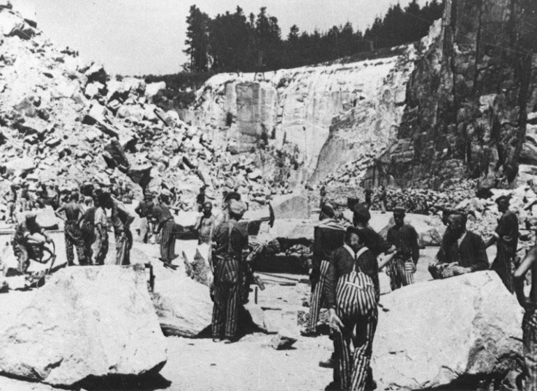
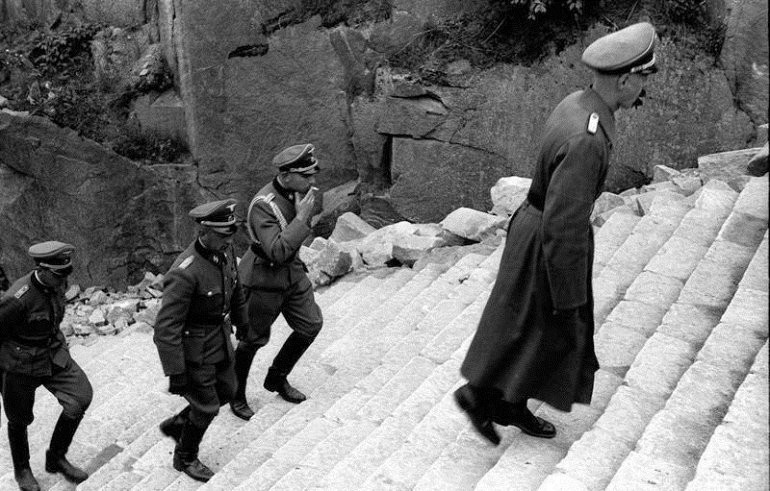

Концентрационный лагерь "Маутхаузен"
Концентрационный лагерь Маутхаузен расположен приблизительно в 20 километрах к востоку от города Линц в Верхней Австрии. Это был один из самых больших концентрационных лагерей в управляемой немцами части Европы, с центральным корпусом около деревни Маутхаузен и почти сотней других корпусов по всей Австрии и южной Германии. Маутхаузен отличался самыми жестокими условиями содержания, будучи классифицированным по «Классу III».
В тридцать девятом году Маутхаузен становится отдельным лагерем. Теперь уже его филиалы создаются по всей Австрии. Всего было почти пятьдесят вспомогательных лагерей. Они располагались на территории рудников, промышленных заводов, других предприятий, на которых был необходим тяжёлый физический труд. Основной же комплекс предназначался для содержания заключённых. Практически всех пленных с других стран и театров боевых действий сначала привозили в концлагерь Маутхаузен.
Несколько раз в течение дня заключенные были вынуждены переносить тяжелые каменные блоки весом более 50 килограммов по 186 ступеням так называемой «Лестницы Смерти». Обессиленные узники часто падали в обморок и роняли свой груз, вызывая ужасающую цепную реакцию с падающими друг на друга заключенными вниз по лестнице. Тяжелые камни наносили непоправимые увечья, отчего люди погибали прямо на лестнице.
"Посещающие карьер Маутхаузена сегодня не видят той же самой картины, так как ступени были отреставрированы — реальная лестница не была зацементирована. Это были просто вырезанные в глине ступени, неравные по размерам, скользкие и практически непригодные для подъема, а уж тем более для спуска. Заключенных заставляли двигаться очень быстро, из-за чего многие падали и роняли свой груз. Камни катились вниз и травмировали идущих сзади.
Сейчас территория бывшего лагеря смерти является мемориальным комплексом. Ежегодно его посещают десятки тысяч туристов. Тут установлены памятники на самых разных языках. Наиболее ужасные места остались без изменений, в назидание будущим поколениям. Списки концлагеря Маутхаузен можно попросить в местном архиве. Там содержатся все фамилии заключенных в алфавитном порядке. Многие русские потомки узников смогли узнать судьбу своих предков благодаря этим архивам.